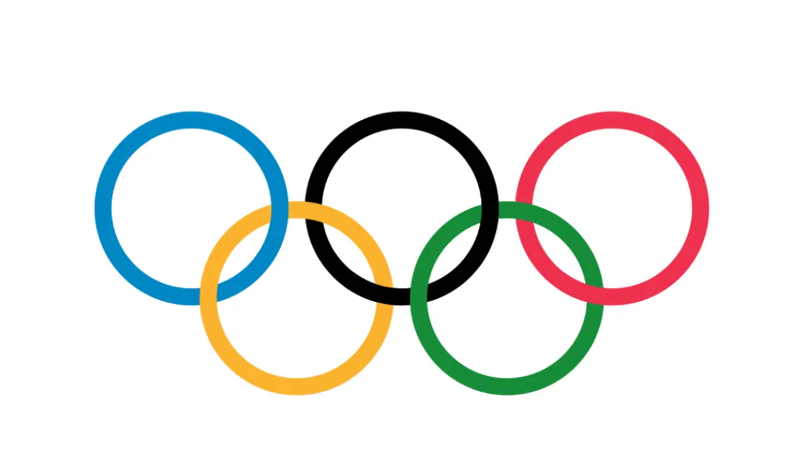

Bienvenidos a los Juegos Olímpicos

Los Juegos Olímpicos son uno de los eventos deportivos más importantes del mundo. Reúnen a atletas de diferentes países para competir en distintas disciplinas deportivas. Se realizan cada cuatro años y buscan promover la unión, la amistad, el respeto y la sana competencia entre las personas.
Historia de los Juegos Olímpicos
La historia de los Juegos Olímpicos data de la antigüedad griega, aproximadamente del siglo VIII a.C. Para ese entonces, se solían llevar a cabo diversos eventos deportivos con la finalidad de homenajear a los dioses del Panteón Olímpico, siendo éstos a los que se les rendía culto por parte de los griegos (además, de allí también proviene su nombre). Dichos juegos consistían en fiestas de gran magnitud en la que diversos luchadores y guerreros se reunían, provenientes de todas las naciones griegas. Tal como hoy, se trataba de escoger a los mejores para concederles premios con la intención de que fueran recordados eternamente (a muchos hasta se les hacía esculturas en su nombre).
Un vistazo a los Juegos Olímpicos
Mira las rutinas de las gimnastas de los Juegos Olímpicos, TOKYO 2020
Información relevante
| Dato | Información |
|---|---|
| Origen | Antigua Grecia |
| Primeros Juegos modernos | 1896, Atenas |
| Fundador del movimiento moderno | Pierre de Coubertin |
| Frecuencia | Cada cuatro años |
| Símbolo | Cinco anillos olímpicos |
| Valores | Excelencia, amistad y respeto |